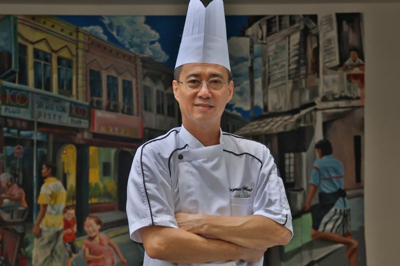

Cerita Kami
Cita Rasa Nusantara didirikan pada tahun 2010 dengan satu misi sederhana: membawa kehangatan masakan rumah ke meja makan Anda. Berawal dari sebuah warung kecil di sudut Yogyakarta, kami kini telah berkembang menjadi destinasi kuliner bagi para pencari rasa otentik.
Kami percaya bahwa setiap hidangan memiliki cerita. Oleh karena itu, kami menolak menggunakan bumbu instan. Semua masakan kami diracik menggunakan rempah-rempah segar yang ditumbuk setiap pagi demi menjaga kualitas rasa warisan leluhur.

Kepala Dapur Kami
Chef Budi Santoso
"Memasak bukan hanya soal rasa, tapi soal hati. Saya memastikan setiap piring yang keluar dari dapur kami dimasak dengan penuh cinta dan standar kebersihan tertinggi."
- 🏆 Pemenang Festival Jajanan Bango 2018
- 🥕 Spesialis Masakan Tradisional Jawa & Sumatera
- 👨🍳 15 Tahun Pengalaman Kuliner